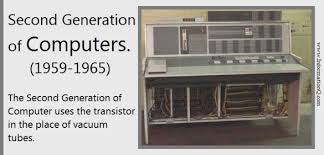
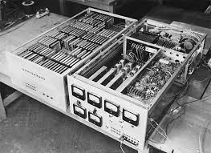
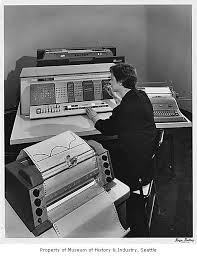
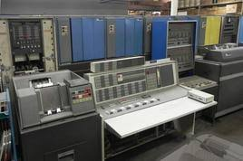
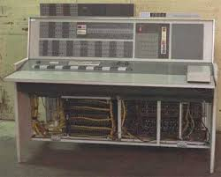
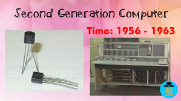

The periode of second generation was from 1959-1965. The second generation computer system was Transistor based. The replacement of vaccum tubes by transistors saw the advent of the second generation of computing. Altough first invented in 1947 transistors weren't used significantly in computers until the end of the 1950s. They were a big improvement over the vaccum tube despite still subjecting computers to damaging levels of heat. However they were hugely superior to the vaccum tubes making computers smaller,faster,cheaper and less heavy on electricity use.
In this generation magnetic cores were used as the primary memory and magnetic tape and magnetic disks as secondary storage devices. in this generation assembly languages like FORTRAN COBOL were used. Examples of the second generation computers include IBM 1620,IBM 7094,CDS 1604,CDS3600,UNIVAC 1108
Pictures and videos second generation
Transistor






videos
This is link for about second generation computer